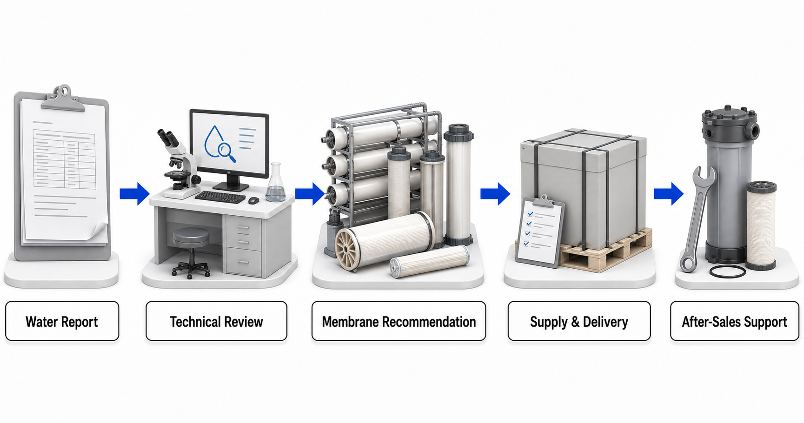

Send a Water or Process-Fluid Report for Technical Review
Do not choose a membrane model before the feed and objective are understood. Send the best available report and project brief. If the data is incomplete, Yuchen Water can provide only an initial screening direction and identify the missing tests.
From report to ongoing support

- Water or process-fluid reportShare representative analysis, sampling point and variability.
- Technical assessmentReview contaminants, fouling and scaling risks, target quality, output and operating conditions.
- Membrane-category recommendationIdentify a suitable RO, NF, UF, MBR, SW Series or specialty direction before confirming material.
- Material and equipment supportConfirm current official material information and discuss pretreatment, housings, pumps, filters and controls.
- Supply and after-sales supportCoordinate supply, remote commissioning guidance, operating discussion and replacement planning.
What to include in the technical brief
Share water chemistry, treatment goals and operating conditions so Yuchen Water can recommend a membrane category, material direction and related equipment support.
Without a representative report and confirmed operating conditions, any response is preliminary and is not a final material or performance commitment.
Frequently asked questions
Why does Yuchen Water ask for a water report before recommending a membrane?
Because source names and TDS do not describe all scaling, fouling, compatibility and treatment-target risks.
Does the knowledge center replace an engineering review?
Without a representative report and confirmed operating conditions, any response is preliminary and is not a final material or performance commitment.